Charly makes Nescafe and shortly after 10:00 am I make my way to Mostar in Bosnia-Herzegovina. The roads are awesome, the temperature is constantly rising, the landscape and the driving fun are terrific, the traffic is from pretty tough to 'alone in the world', the border crossing is annoying and probably useless.
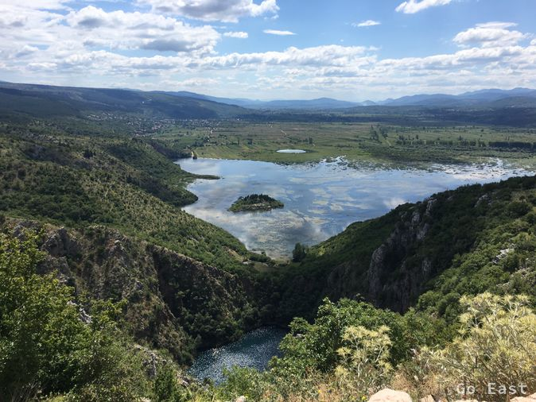
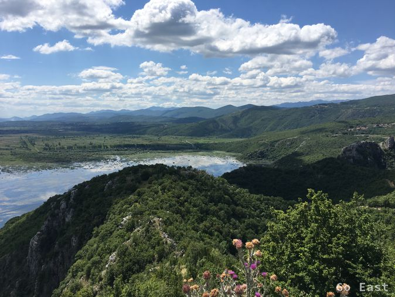
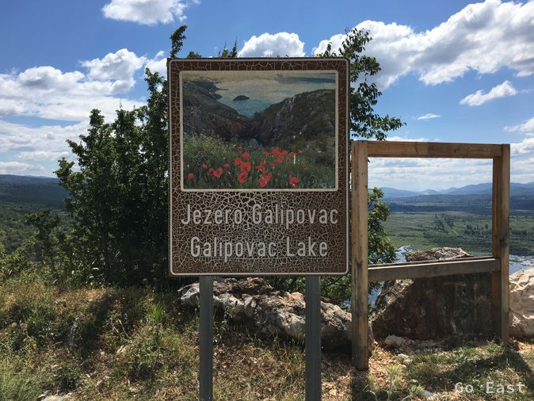
Arriving in Mostar, it is noticeable that there are churches and mosques. The way to the old bridge (stari most) is signposted. In front of the bridge, I am immediately greeted by self-proclaimed car park guards, who assure me to take care of my motorcycle and belongings as long as I am on my way to the bridge. The service industry is very active here.
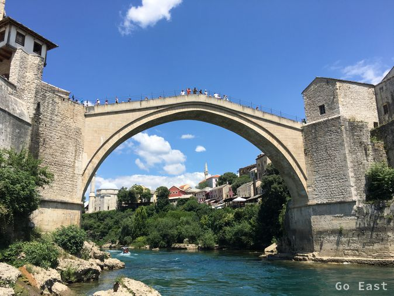
At the bridge, which is surrounded by all sorts of tourist shops, the whole world seems to have gathered. Crowds of people push themselves over the bridge and are encouraged by young men to donate, which in turn jump from the 19 meter high bridge into the underlying river, Neretva, and thus prove their courage.
For centuries the bridge has been considered the symbolic bridge between East and West, not only between the world of Christianity and the Islamic world, but also between the Catholic Croats and Orthodox Serbs. The bridge was destroyed in 1993 during the Bosnian War and then rebuilt.
The bridge decking is impressive and reminds me of the bridges in Venice. I enjoy the buzz for a while over an espresso and wonder how many posts per minute are sent from here to Facebook.
I'm on my way to Dubrovnik and the temperature has reached 33 degrees celsius. The wind does not cool anymore and the waiting in line at the border, which I have to pass again to Croatia, becomes torture with helmet and gear.
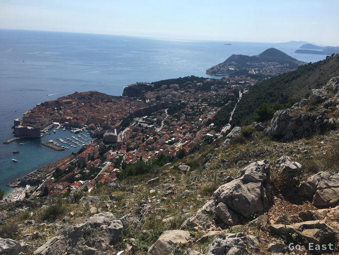
Arriving in Dubrovnik I meet Charly again, who had meanwhile viewed the old town and was bathing in the Mediterranean. We drive along the coastal road and shortly after arrive in Montenegro.
Croatia is in the EU but has its own currency, the kuna, but the euro is taken everywhere. Montenegro is not in the EU but has the euro. It is also striking that both Bosnia-Herzegovina and Montenegro have EU license plates, but without a star wreath. This is how hopes are expressed. Incidentally, Croatia seems to me to be very closely connected with Germany, which is documented by the company names and brands that can be found everywhere.
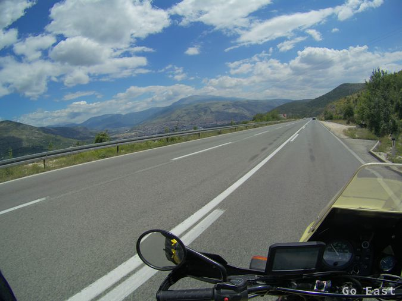
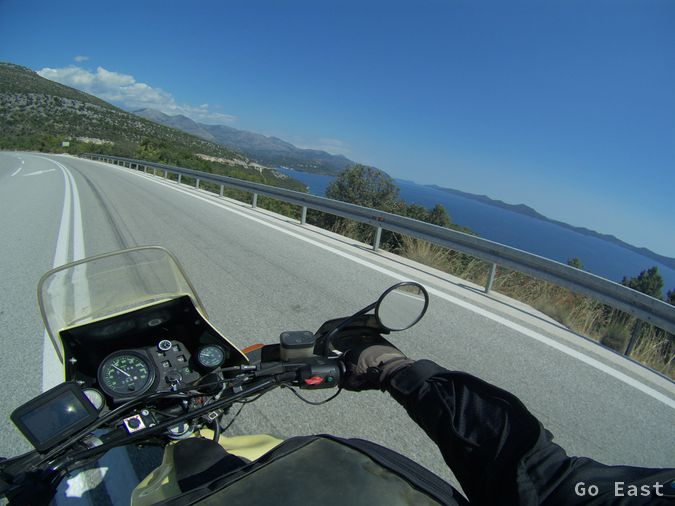
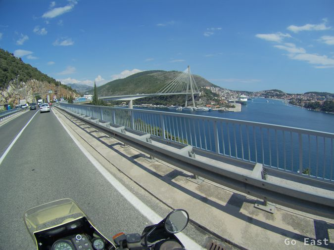
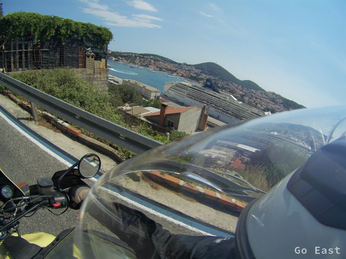
The road to Tivat is interrupted by a ferry, which regularly runs to offer us a welcome change.
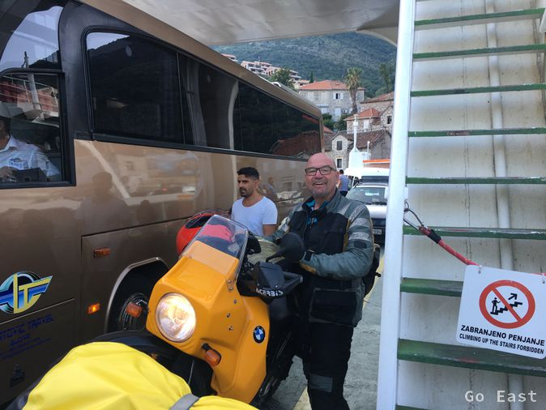
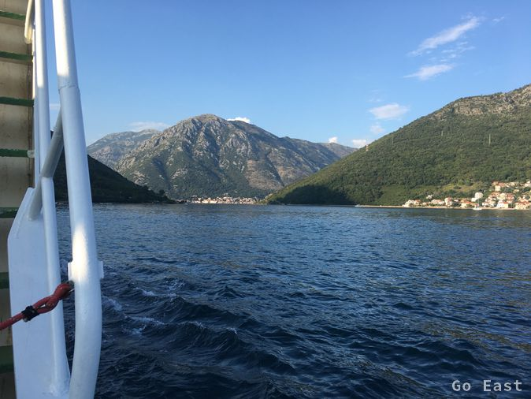
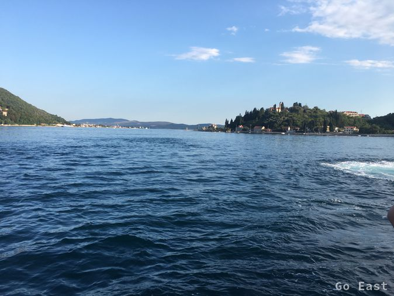
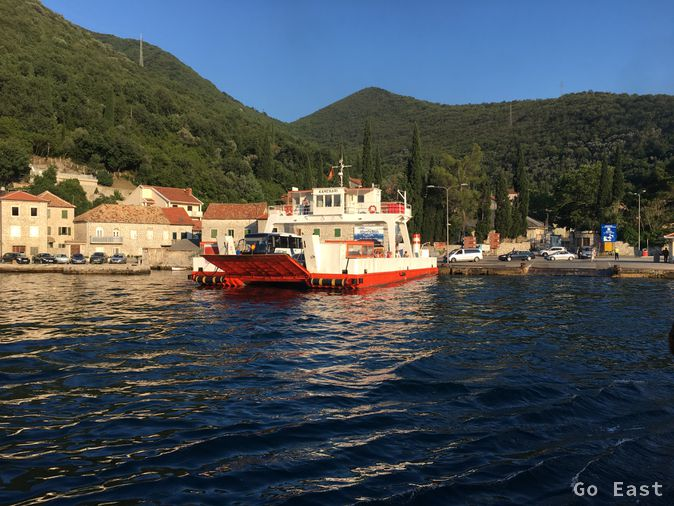
We reach Tivat on the Bay of Kotor and quickly find a nice accommodation. In the restaurant of the Waikiki Beach Resort we philosophize about life after enjoying our meal and a delicious local grape liquor called Loza We enjoy speaking with the Serbian waiter about the premature departure of the German national team at the World Cup. (Croatia plays against England semi-final tomorrow)
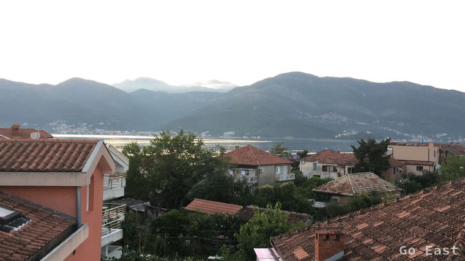
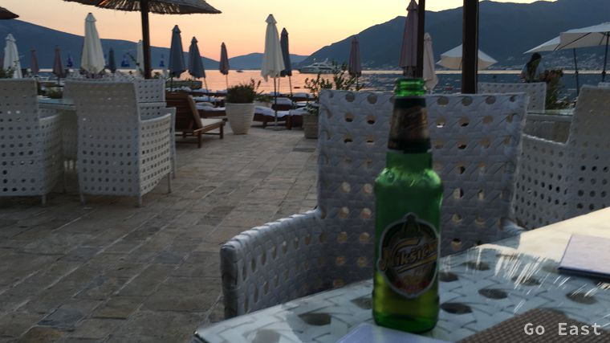